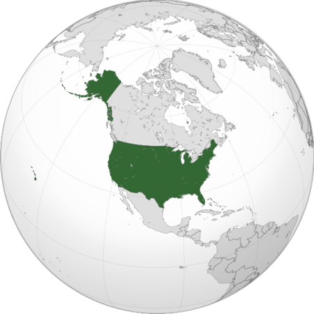
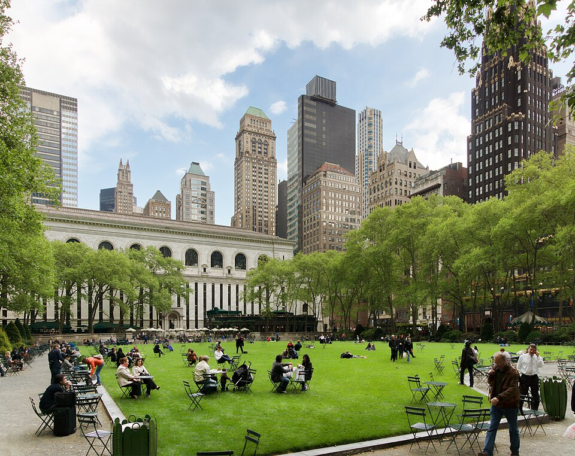
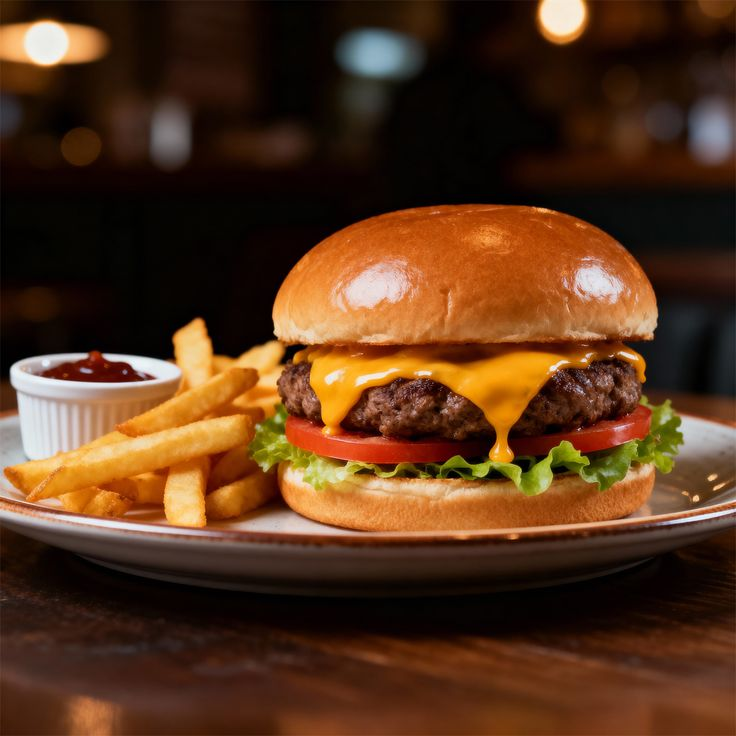
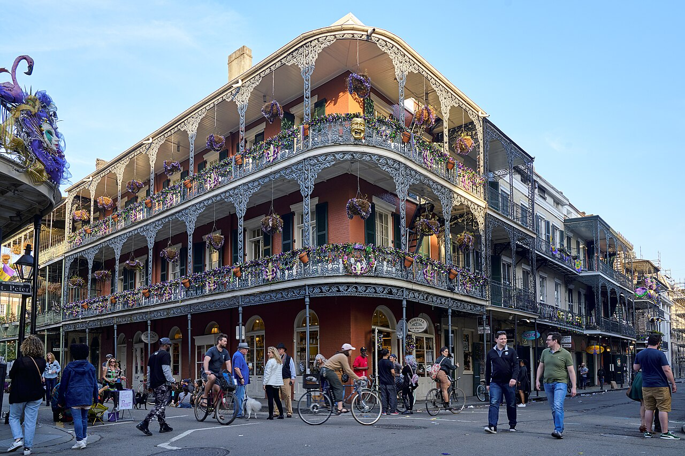
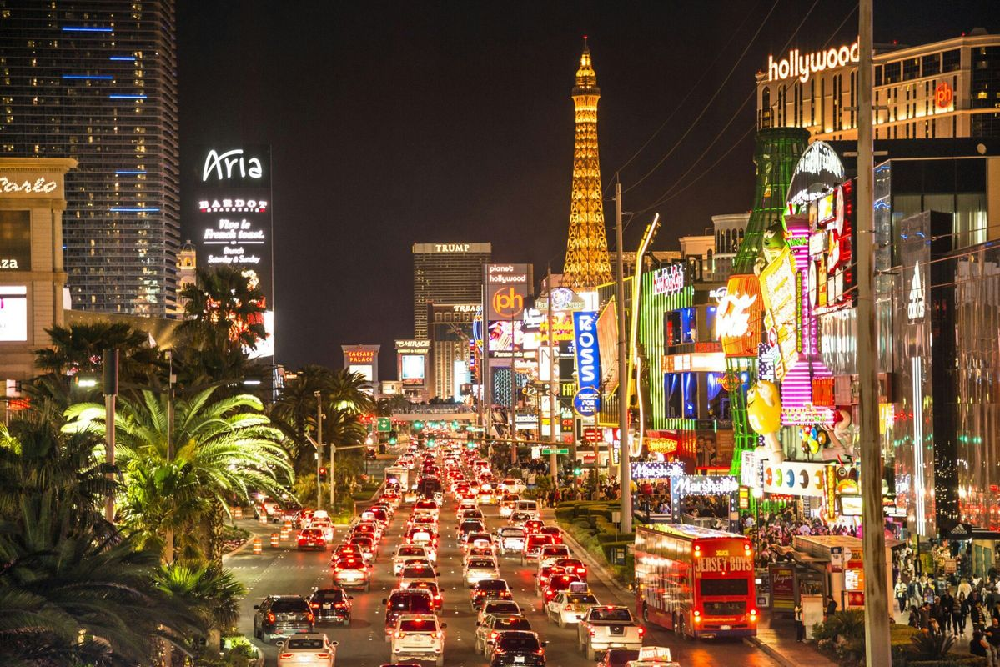
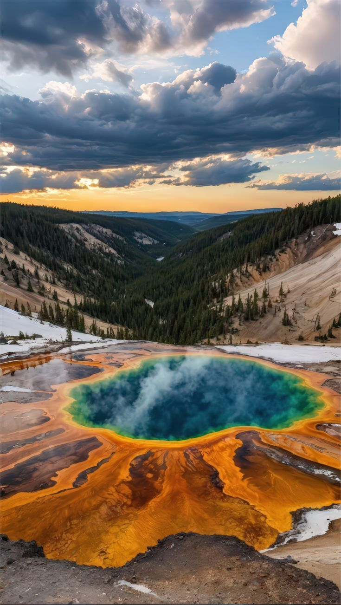
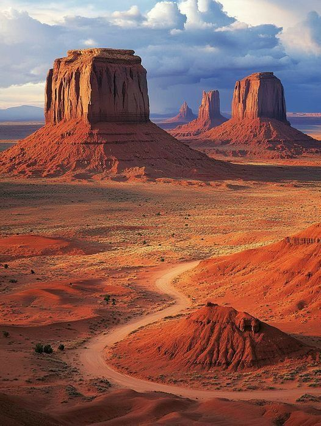
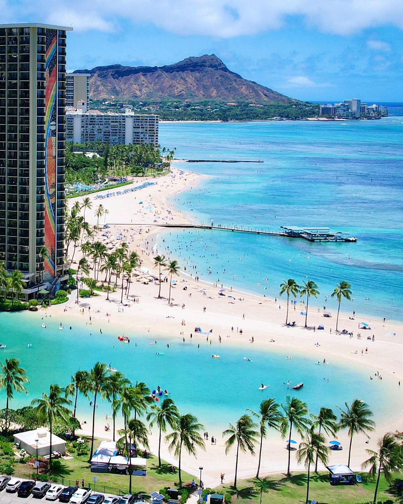
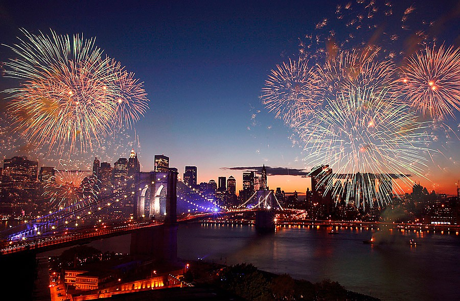

США
Страна небоскрёбов, джаза и Голливуда — где пятьдесят штатов, от ледников Аляски до пляжей Флориды, складываются в одну нацию и один звёздно-полосатый флаг.
Соединённые Штаты Америки — федерация из пятидесяти штатов, растянувшаяся от ледников Аляски до пляжей Флориды, от небоскрёбов Манхэттена до красных каньонов Юты. Здесь редко какая страна вмещает столько климатов, ландшафтов и культур в границах одного государства. Откройте США и узнайте, чем страна покоряет весь мир — от рок-н-ролла до космических запусков.
США на карте мира

США — Северная Америка, между Атлантическим и Тихим океанами
Континентальный размах: США — четвёртая по площади страна мира. Путь на машине с восточного побережья до западного занимает около 40 часов без остановок — а если ехать через все 50 штатов, не хватит и месяца.
С кем граничит США
Континентальную часть страны окружают всего два государства — зато сразу с двух океанов:
Океаны и заливы вокруг страны
Наведи курсор на карточку, чтобы узнать больше о каждом побережье:
Атлантический океан
Омывает восточное побережье — от штата Мэн до Флориды
Тихий океан
Омывает западное побережье — от Вашингтона до Калифорнии
Мексиканский залив
Тёплые воды у южного побережья Техаса и Флориды
Северный Ледовитый океан
Омывает северное побережье Аляски
Общие сведения
Площадь
9 833 517 км² (3-я в мире)
% водной поверхности
6,8 %
Население
335 000 000 чел. (3-е)
Плотность
36 чел./км²
Столица
Вашингтон
Форма правления
Федеративная президентская республика
Официальный язык
Английский
Президент
Избирается на 4 года
Названия жителей
Американцы
Валовой Внутренний Продукт
На душу населения
~85 000 долл.
Итого
~29 трлн
Валюта
доллар США (USD)
Телефонный код
+1
Часовой пояс
от UTC-10 до UTC-5
Интерактивная карта штатов
Наведи курсор на плитку — появится столица штата и любопытный факт. Кнопки ниже подсвечивают целый регион.
Наведите курсор на любую плитку карты — здесь появится столица штата и интересный факт о нём.
Один день в США
Представьте, что сегодня вы проснулись где-то в Америке. Как может выглядеть ваш идеальный день?

Доброе утро, Нью-Йорк
Начните утро с бумажного стаканчика кофе и бейгла у уличной тележки. Наблюдайте, как просыпается город, который никогда не спит.
📍 Нью-Йорк
Прогулка в Брайант-парке
Отправляемся в уютный Брайант-парк в самом центре Манхэттена. Здесь можно отдохнуть среди зелени, полюбоваться небоскрёбами и почувствовать атмосферу Нью-Йорка всего в нескольких минутах от Таймс-сквер.
📍 Гранд-Каньон, Аризона
Время обеда
Самое время заглянуть в придорожный дайнер и попробовать классический американский бургер с картошкой фри. В США еда на колёсах — часть дорожной культуры.
🍴 Придорожный дайнер
Вечер с джазом
Прогуляйтесь по французскому кварталу Нового Орлеана — родине джаза. Живая музыка звучит из каждого второго бара на Бурбон-стрит.
📍 Новый Орлеан
Ночь продолжается
Завершите день неоновыми огнями Лас-Вегаса — города, который живёт по своим часам и никогда не выключает свет.
📍 Лас-ВегасСамые красивые места
 Статуя Свободы
Статуя Свободы
Подарок Франции 1886 года и главный символ американской мечты, встречающий корабли у входа в порт Нью-Йорка.
 Гранд-Каньон
Гранд-Каньон
Один из самых узнаваемых природных ландшафтов планеты — каньон длиной 446 км, прорезанный рекой Колорадо.

ЙеллоустоунПервый национальный парк в мире с гейзерами, горячими источниками и вулканом под землёй.
 Ниагарский водопад
Ниагарский водопад
Три водопада на границе с Канадой, сбрасывающие более 2800 тонн воды в секунду.

Монумент-ВэллиКрасные скалы-останцы на границе Аризоны и Юты, знакомые всему миру по вестернам.

ГавайиАрхипелаг вулканического происхождения посреди Тихого океана — пляжи, лава и сёрфинг круглый год.
Национальная кухня

Бургер
Котлета, булочка, сыр и бесконечные вариации соусов — бургер стал главным экспортным блюдом Америки и символом уличной еды XX века, хотя корни его уходят к немецким переселенцам.
Барбекю
Медленно копчённое мясо на дровах — у каждого региона свой стиль: техасская грудинка, теннессийские рёбра, каролинская свинина в уксусном соусе. Спор о «правильном» барбекю не утихает десятилетиями.

Яблочный пирог
«As American as apple pie» — фраза, ставшая идиомой. Простой пирог из теста и яблок с корицей символизирует домашний уют и семейные традиции американской кухни.
Флаг и герб США
Символы, за которыми стоит своя история

Stars and Stripes — «звёзды и полосы», как называют флаг сами американцы
Что означают цвета флага
Наведи курсор на каждую полосу, чтобы узнать её значение:
Красный
Символизирует стойкость и отвагу. Тринадцать красно-белых полос представляют тринадцать колоний, провозгласивших независимость
Белый
Означает чистоту и невинность. Белые звёзды на синем поле — каждая представляет один из пятидесяти штатов
Синий
Символ бдительности, стойкости и справедливости — цвет «юниона» в верхнем углу флага
Краткая история флага
- 1776Тринадцать колоний провозглашают независимость от Великобритании 4 июля.
- 1777Континентальный конгресс утверждает первый флаг с 13 звёздами и 13 полосами.
- 1818Принят закон, навсегда закрепивший 13 полос — а число звёзд решено менять по числу штатов.
- 1960После присоединения Гавайев флаг получает нынешние 50 звёзд.
Большая печать США — что зашифровано в символах

Парад 4 июля — салют и фейерверки в честь Дня независимости по всей стране.
Государственные праздники
Главный праздник страны — 4 июля, День независимости. Праздник в честь провозглашения независимости США в 1776 году. По всей стране проходят парады, барбекю и фейерверки.
Новый год
New Year's Day — фейерверки и обратный отсчёт на Таймс-сквер
День Мартина Лютера Кинга
Martin Luther King Jr. Day — памятная дата в честь борьбы за гражданские права
День президентов
Presidents' Day — день памяти всех президентов США, включая Джорджа Вашингтона
День памяти
Memorial Day — день памяти погибших военнослужащих, неофициальное начало лета
День независимости
Independence Day — главный государственный праздник страны
День труда
Labor Day — неофициальный конец лета
Хэллоуин
Halloween — тыквы, костюмы и обход домов с криком «Trick or treat!»
День ветеранов
Veterans Day — чествование всех, кто служил в вооружённых силах страны
День благодарения
Thanksgiving — семейный ужин с индейкой, самый «домашний» праздник в календаре США
Рождество
Christmas — гирлянды, витрины Пятой авеню и подарки под ёлкой по всей стране